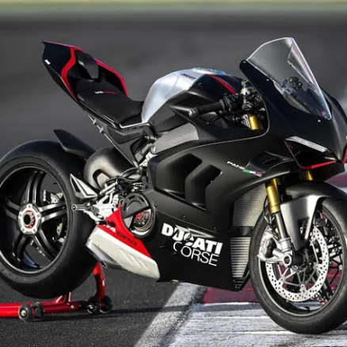
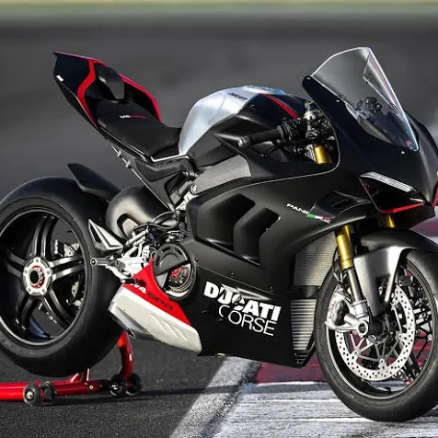

La Yamaha YZF-R6 es una motocicleta deportiva fue fabricada por Yamaha en Japón y exportada a varios países.
Fue lanzada en 1999, un año después de su predecesora, la Yamaha FZR600.
Velocidad máxima: 292 km/h (162 mph)
Aceite: 3.4 L,
Altura del asiento: 850 mm
Año de modelo: 2014,
Cambio: 6 marchas
Cilindrada: 599 cc,
Clase: motocicleta deportiva
Compraste:
0
La Kawasaki Ninja H2 es una motocicleta de clase " superdeportiva sobrealimentada "
de la serie de motos deportivas Ninja fabricada por Kawasaki,
que cuenta con un sobrealimentador centrífugo de velocidad variable.
Compresión: 8.5:1 (H2); 8.3:1 (H2R)
Diámetro/carrera: 76.0|×|55.0|mm,
Producción: 2015–presente,
Transmisión: 6 velocidades
Compraste:
0
La Ducati Panigale V4 es una moto deportiva con un motor V4 desmodrómico a 90° de 1.103 cc (67,3 cu pulg)
introducido por Ducati en 2018 como sucesora de la 1299 con motor bicilíndrico en V.
Una versión de menor cilindrada cumple con el reglamento de competición de la categoría Superbike,
que establece Más de 750 cc hasta 1000 cc para motores de tres y cuatro cilindros y 4 tiempos.
Peso en seco 172 kg (379 lb),
Altura de asiento 830 mm (32.7 pulg.), Capacidad del tanque de combustible 16 l (4.23 US gal.)
Compraste:
0
La Honda CBR600RR es una moto deportiva de 599 cc (36,6 cu pulg.) fabricada por Honda desde 2003, que forma parte de la serie CBR.
La CBR600RR se comercializó como la moto deportiva de peso medio más alta de Honda, sucesora de la Campeona del Mundo de Supersport 2001-2006 CBR600F4i,
que se reposicionó como la moto deportiva más tranquila y orientada a la calle, detrás de la técnicamente más avanzada e inflexible réplica de competición CBR600RR.
Compraste:
0
La BMW S1000RR se presentó en Múnich en abril de 2008, y está propulsada por un motor de cuatro cilindros en línea transversal de 999 cc (61,0 cu pulg.)
que gira a 14.200 rpm.
Cuenta con un sistema antibloqueo de frenos de serie, con un control electrónico de tracción opcional. Tiene un peso en mojado de 204 kg (450 lb), y produce 148,4 kW (199,0 CV; 201,8 PS) a 13.500 rpm.
Con 133,6 kW (179,2 CV; 181,6 PS) a la rueda trasera,fue la motocicleta más potente de la clase.

 
